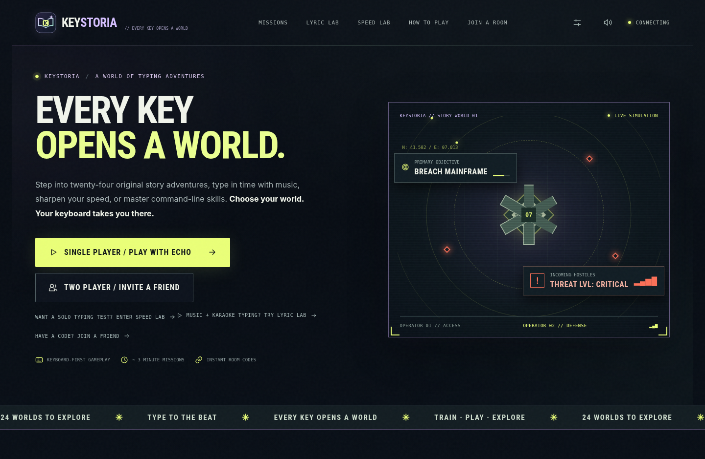
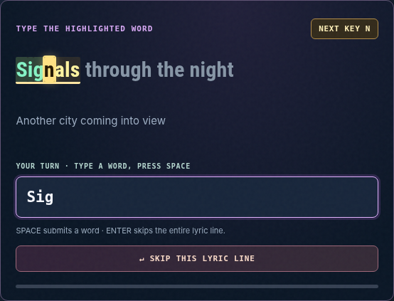

Story Worlds
Twenty-four original scenarios, cinematic scenes, and cooperative typing challenges. Play solo with an AI partner or invite a friend by room code.
STORY-DRIVEN CO-OP →✦ ORIGINAL TYPING GAME COLLECTION PORTFOLIO PROJECT
A keyboard becomes an escape route, a rhythm instrument, a challenge, and a new skill. Keystoria turns typing into something worth coming back for.

01 / CHOOSE YOUR EXPERIENCE
Different genres, different goals. The same simple idea: make every keystroke matter.
Twenty-four original scenarios, cinematic scenes, and cooperative typing challenges. Play solo with an AI partner or invite a friend by room code.
STORY-DRIVEN CO-OP →Type along with timed lyrics. A flashing next-letter cue, color-coded accuracy, and an original offline demo make rhythm practice feel intuitive.
MUSIC + TYPING →Quick 15, 30, 60, or 120-second challenges with live feedback, WPM, accuracy, and personal-best tracking in your own browser.
PURE TYPING PRACTICE →Learn real command patterns across Windows, macOS, and Linux inside a safe teaching simulation. Nothing is executed on your device.
SKILLS + INTERACTION →
02 / THE LITTLE DETAILS
When a word is active in Lyric Lab, the current letter flashes in place. Correct input turns green, mistakes become red, and the yellow word highlight stays visible. It's a small detail that makes the whole experience easier to follow.
03 / ENGINEERING
An original browser experience backed by a real-time game server, authored content, and testable interactions.
Real-time asymmetric roles, a server-authoritative game engine, and reconnect handling.
Modular UI controllers, responsive CSS, no frontend build step, and local save state.
Mission logic, timed room updates, optional video matching, and local development launchers.
Python and JavaScript regressions plus Chromium browser checks for important gameplay flows.
04 / GETTING HANDS ON
Keystoria is currently a locally runnable portfolio prototype. A public playable URL has not been set up. The full experience requires its Python/WebSocket server; this showcase is intentionally static.
Mac: Extract the project and run run_mac.command.
Windows: Extract the project and run run_windows.bat.
Browser: Open http://localhost:8080 after starting the server.